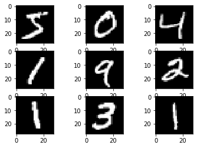
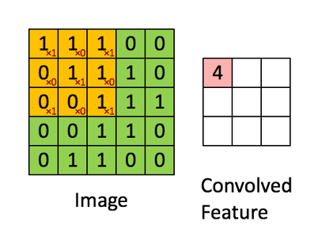
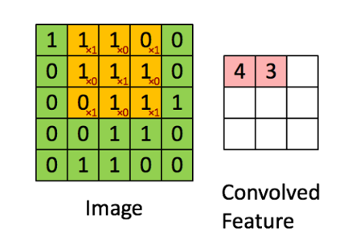
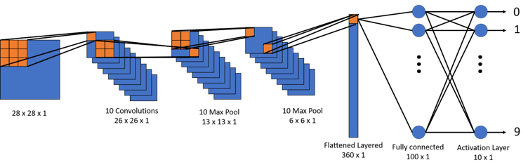
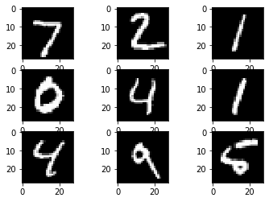

from keras.models import Sequential
from keras.layers import Dense, Conv2D, Flatten, MaxPooling2D
from keras.datasets import mnist
from matplotlib import pyplot
from keras.utils import to_categorical
The mnist dataset
(x_train, y_train), (x_test, y_test) = mnist.load_data()
for i in range(9):
# define subplot
pyplot.subplot(330 + 1 + i)
# plot raw pixel data
pyplot.imshow(x_train[i], cmap=pyplot.get_cmap('gray'))

Reshape the data
For example, we know that the images are all pre-aligned (e.g. each image only contains a hand-drawn digit), that the images all have the same square size of 28 × 28 pixels, and that the images are grayscale.
Therefore, we can load the images and reshape the data arrays to have a single color channel.
Here is the current shape.
What does this image look like.
The image is in gray scale so each pixel has a number 0 - 255 for the shade of grey. Here is the general shape of the array of images.
x_train.shape
(60000, 28, 28)
Here is a breakdown of the numbers:
1. 60000 is the number of images in the array
2. 28 is the number of pixels for the width
3. 28 (the second one) is the number of pixels for the height
Here is what a single image looks like in data form
x_train[1]
array([[ 0, 0, 0, 0, 0, 0, 0, 0, 0, 0, 0, 0, 0,
0, 0, 0, 0, 0, 0, 0, 0, 0, 0, 0, 0, 0,
0, 0],
[ 0, 0, 0, 0, 0, 0, 0, 0, 0, 0, 0, 0, 0,
0, 0, 0, 0, 0, 0, 0, 0, 0, 0, 0, 0, 0,
0, 0],
[ 0, 0, 0, 0, 0, 0, 0, 0, 0, 0, 0, 0, 0,
0, 0, 0, 0, 0, 0, 0, 0, 0, 0, 0, 0, 0,
0, 0],
[ 0, 0, 0, 0, 0, 0, 0, 0, 0, 0, 0, 0, 0,
0, 0, 0, 0, 0, 0, 0, 0, 0, 0, 0, 0, 0,
0, 0],
[ 0, 0, 0, 0, 0, 0, 0, 0, 0, 0, 0, 0, 0,
0, 0, 51, 159, 253, 159, 50, 0, 0, 0, 0, 0, 0,
0, 0],
[ 0, 0, 0, 0, 0, 0, 0, 0, 0, 0, 0, 0, 0,
0, 48, 238, 252, 252, 252, 237, 0, 0, 0, 0, 0, 0,
0, 0],
[ 0, 0, 0, 0, 0, 0, 0, 0, 0, 0, 0, 0, 0,
54, 227, 253, 252, 239, 233, 252, 57, 6, 0, 0, 0, 0,
0, 0],
[ 0, 0, 0, 0, 0, 0, 0, 0, 0, 0, 0, 10, 60,
224, 252, 253, 252, 202, 84, 252, 253, 122, 0, 0, 0, 0,
0, 0],
[ 0, 0, 0, 0, 0, 0, 0, 0, 0, 0, 0, 163, 252,
252, 252, 253, 252, 252, 96, 189, 253, 167, 0, 0, 0, 0,
0, 0],
[ 0, 0, 0, 0, 0, 0, 0, 0, 0, 0, 51, 238, 253,
253, 190, 114, 253, 228, 47, 79, 255, 168, 0, 0, 0, 0,
0, 0],
[ 0, 0, 0, 0, 0, 0, 0, 0, 0, 48, 238, 252, 252,
179, 12, 75, 121, 21, 0, 0, 253, 243, 50, 0, 0, 0,
0, 0],
[ 0, 0, 0, 0, 0, 0, 0, 0, 38, 165, 253, 233, 208,
84, 0, 0, 0, 0, 0, 0, 253, 252, 165, 0, 0, 0,
0, 0],
[ 0, 0, 0, 0, 0, 0, 0, 7, 178, 252, 240, 71, 19,
28, 0, 0, 0, 0, 0, 0, 253, 252, 195, 0, 0, 0,
0, 0],
[ 0, 0, 0, 0, 0, 0, 0, 57, 252, 252, 63, 0, 0,
0, 0, 0, 0, 0, 0, 0, 253, 252, 195, 0, 0, 0,
0, 0],
[ 0, 0, 0, 0, 0, 0, 0, 198, 253, 190, 0, 0, 0,
0, 0, 0, 0, 0, 0, 0, 255, 253, 196, 0, 0, 0,
0, 0],
[ 0, 0, 0, 0, 0, 0, 76, 246, 252, 112, 0, 0, 0,
0, 0, 0, 0, 0, 0, 0, 253, 252, 148, 0, 0, 0,
0, 0],
[ 0, 0, 0, 0, 0, 0, 85, 252, 230, 25, 0, 0, 0,
0, 0, 0, 0, 0, 7, 135, 253, 186, 12, 0, 0, 0,
0, 0],
[ 0, 0, 0, 0, 0, 0, 85, 252, 223, 0, 0, 0, 0,
0, 0, 0, 0, 7, 131, 252, 225, 71, 0, 0, 0, 0,
0, 0],
[ 0, 0, 0, 0, 0, 0, 85, 252, 145, 0, 0, 0, 0,
0, 0, 0, 48, 165, 252, 173, 0, 0, 0, 0, 0, 0,
0, 0],
[ 0, 0, 0, 0, 0, 0, 86, 253, 225, 0, 0, 0, 0,
0, 0, 114, 238, 253, 162, 0, 0, 0, 0, 0, 0, 0,
0, 0],
[ 0, 0, 0, 0, 0, 0, 85, 252, 249, 146, 48, 29, 85,
178, 225, 253, 223, 167, 56, 0, 0, 0, 0, 0, 0, 0,
0, 0],
[ 0, 0, 0, 0, 0, 0, 85, 252, 252, 252, 229, 215, 252,
252, 252, 196, 130, 0, 0, 0, 0, 0, 0, 0, 0, 0,
0, 0],
[ 0, 0, 0, 0, 0, 0, 28, 199, 252, 252, 253, 252, 252,
233, 145, 0, 0, 0, 0, 0, 0, 0, 0, 0, 0, 0,
0, 0],
[ 0, 0, 0, 0, 0, 0, 0, 25, 128, 252, 253, 252, 141,
37, 0, 0, 0, 0, 0, 0, 0, 0, 0, 0, 0, 0,
0, 0],
[ 0, 0, 0, 0, 0, 0, 0, 0, 0, 0, 0, 0, 0,
0, 0, 0, 0, 0, 0, 0, 0, 0, 0, 0, 0, 0,
0, 0],
[ 0, 0, 0, 0, 0, 0, 0, 0, 0, 0, 0, 0, 0,
0, 0, 0, 0, 0, 0, 0, 0, 0, 0, 0, 0, 0,
0, 0],
[ 0, 0, 0, 0, 0, 0, 0, 0, 0, 0, 0, 0, 0,
0, 0, 0, 0, 0, 0, 0, 0, 0, 0, 0, 0, 0,
0, 0],
[ 0, 0, 0, 0, 0, 0, 0, 0, 0, 0, 0, 0, 0,
0, 0, 0, 0, 0, 0, 0, 0, 0, 0, 0, 0, 0,
0, 0]], dtype=uint8)
So the above array looks a little complicated, but it is not so bad. The image is 28 x 28. The following represents the first row of pixels:
[ 0, 0, 0, 0, 0, 0, 0, 0, 0, 0, 0, 0, 0,
0, 0, 0, 0, 0, 0, 0, 0, 0, 0, 0, 0, 0,
0, 0]
In the grey scale 0 = black. So the first row is all black pixels. You will notice there are 28 - zeros.
The next row is:
[ 0, 0, 0, 0, 0, 0, 0, 0, 0, 0, 0, 0, 0,
0, 0, 0, 0, 0, 0, 0, 0, 0, 0, 0, 0, 0,
0, 0]
It is also all black. You will notice there are 28 of the above lists. One list of 28 for each row of pixels. When you see a number that is something lighter than black. If you see 255 it is white.
Reshaping the data so that it can be used in a CNN
The only thing we need to add to the shape is the number of channels. The mnist data set is in gray scale so it is just one (1) channel. The other common option is three (3) channels for the Red-Green-Blue channels. You could have a lot more channels, e.g. the infrared channel would give you four.
x_train= x_train.reshape((x_train.shape[0], x_train.shape[1], x_train.shape[2], 1))
x_test= x_test.reshape((x_test.shape[0], x_test.shape[1], x_test.shape[2], 1))
The new shape
x_train.shape
(60000, 28, 28, 1)
What an image looks like now
x_train[0]
array([[[ 0],
[ 0],
[ 0],
[ 0],
[ 0],
[ 0],
[ 0],
[ 0],
[ 0],
[ 0],
[ 0],
[ 0],
[ 0],
[ 0],
[ 0],
[ 0],
[ 0],
[ 0],
[ 0],
[ 0],
[ 0],
[ 0],
[ 0],
[ 0],
[ 0],
[ 0],
[ 0],
[ 0]],
[[ 0],
[ 0],
[ 0],
[ 0],
[ 0],
[ 0],
[ 0],
[ 0],
[ 0],
[ 0],
[ 0],
[ 0],
[ 0],
[ 0],
[ 0],
[ 0],
[ 0],
[ 0],
[ 0],
[ 0],
[ 0],
[ 0],
[ 0],
[ 0],
[ 0],
[ 0],
[ 0],
[ 0]],...], dtype=uint8)
It looks different and here is why. Becuase we added a channel you will now have a new sub list in the orginal list.
The orginal list looked like this:
[ 0, 0, 0, 0, 0, 0, 0, 0, 0, 0, 0, 0, 0,
0, 0, 0, 0, 0, 0, 0, 0, 0, 0, 0, 0, 0,
0, 0]
The new list looks like this:
[[ 0],[ 0],[ 0],[ 0],[ 0],[ 0],[ 0],[ 0],[ 0], [ 0],[ 0],[ 0],[ 0],
[ 0],[ 0],[ 0],[ 0],[ 0],[ 0],[ 0],[ 0],[ 0],[ 0],[ 0],[ 0],[ 0],
[ 0],[ 0]]
We added one (1) channel so instead of 0 you have [0]. Had we added three (3) channels you would have had [0,0,0].
Adjusting the response variable
We are not going to create dummy variables for the response (the numbers 0 - 9)
Here is what it looks like currently
y_train
array([5, 0, 4, ..., 5, 6, 8], dtype=uint8)
y_train = to_categorical(y_train)
y_test = to_categorical(y_test)
Here is what it looks like now
y_train
array([[0., 0., 0., ..., 0., 0., 0.],
[1., 0., 0., ..., 0., 0., 0.],
[0., 0., 0., ..., 0., 0., 0.],
...,
[0., 0., 0., ..., 0., 0., 0.],
[0., 0., 0., ..., 0., 0., 0.],
[0., 0., 0., ..., 0., 1., 0.]], dtype=float32)
Intialize the model object
model = Sequential()
Add a convolutional layer
model.add(Conv2D(10, kernel_size = 3, activation = 'relu',strides=(1, 1),
input_shape = (x_train.shape[1],x_train.shape[2],x_train.shape[3]), padding = 'valid'))
What is in the layer
10. This is the number of filters. A filter could be related to anything. One filter could be associated with finding the edges, one could be finding the number of edges…kernel_size = 3. This specifies the height and width of the convolotion window. In this case our convolution window is a3 x 3matrix, which means it exams 9 pixels (3x3) at one time.strides = (1,1). This is the number of pixels your convolution window moves. It moves1horizontally until it hits the far side, starts over1row down and continues until it finishes the image.input_shape = ...this is the size of the input.padding = 'same'. adds a zero padding to the image. The default ispadding = 'valid'
A convolution explained
The objective of the Convolution Operation is to extract the high-level features such as edges, from the input image. In this network there filters/kernals that are 3 x 3. They move along the image at a stride length of 1. Here is to pictures the explain what is happening. Each time the dot product is used to calculate the “pink” element of the output matrix.
 
Calculating the size of the output
$O = ((I - K + 2P )/S) + 1$
where,
$I = $size of the input
$K = $size of the kernel
$P = $size of the zero padding
$S = $strides
Pooling
Pooling layer is responsible for reducing the spatial size of the Convolved Feature. This is to decrease the computational power required to process the data through dimensionality reduction. Furthermore, it is useful for extracting dominant features which are rotational and positional invariant, thus maintaining the process of effectively training of the model.
model.add(MaxPooling2D((2,2)))
In this case the Max Pooling will reduce the dimensionality by half. We stareted with 28 x 28. Each convoluted layer will be 26 x 26 and with a pooling of (2,2) the pooled layers become 13 x 13. Below is an example of how Max Pooling works. It takes the max value out of a 2x2 matrix.

Add another Max Pooling layer becuase it makes it work a lot better
Now the layers dimensions will change from 13 x 13 to 6 x 6 becuase $13$ is odd.
model.add(MaxPooling2D((2,2)))
Flatten the output of the convolutional layer
Flatten is like it sounds. We will take the matrix and flatten it into a vector.

model.add(Flatten())
Add a dense layer with
This dense layer will have 100 nodes with a relu activation function.
model.add(Dense(100,activation = 'relu'))
Add an output layer for the 10 categories
We are adding 10 nodes in the output layer becuase there are 10 numbers (0-9)
model.add(Dense(10, activation='softmax'))
What the model looks like
Here is a picture that explains what the model looks like.

Compile the model
model.compile(optimizer='adam',
loss='categorical_crossentropy',
metrics=['accuracy'])
Fit the model on a training set
model.fit(x_train, y_train,
validation_split=0.2,
epochs=3, batch_size=10)
Train on 48000 samples, validate on 12000 samples
Epoch 1/3
48000/48000 [==============================] - 23s 470us/step - loss: 2.3569 - acc: 0.8215 - val_loss: 0.1542 - val_acc: 0.9552
Epoch 2/3
48000/48000 [==============================] - 20s 417us/step - loss: 0.1382 - acc: 0.9602 - val_loss: 0.1163 - val_acc: 0.9654
Epoch 3/3
48000/48000 [==============================] - 22s 453us/step - loss: 0.0957 - acc: 0.9710 - val_loss: 0.1051 - val_acc: 0.9706
<keras.callbacks.History at 0x7f3b8ff31940>
Evaluate the model on separate test data
model.evaluate(x_test,y_test,batch_size=10)
10000/10000 [==============================] - 2s 171us/step
[0.0985311105441906, 0.9700999952554703]
x_test[1:2].shape
(1, 28, 28, 1)
for i in range(9):
pyplot.subplot(330 + 1 + i)
pyplot.imshow(x_test[i].reshape(28,28), cmap=pyplot.get_cmap('gray'))

prediction = []
for i in range(9):
digit = model.predict_classes(x_test[i].reshape(1, 28, 28, 1))
prediction.append(digit[0])
prediction
[7, 2, 1, 0, 4, 1, 4, 9, 5]
Model Summary
model.summary()
_________________________________________________________________
Layer (type) Output Shape Param #
=================================================================
conv2d_16 (Conv2D) (None, 26, 26, 10) 100
_________________________________________________________________
max_pooling2d_6 (MaxPooling2 (None, 13, 13, 10) 0
_________________________________________________________________
max_pooling2d_7 (MaxPooling2 (None, 6, 6, 10) 0
_________________________________________________________________
flatten_11 (Flatten) (None, 360) 0
_________________________________________________________________
dense_20 (Dense) (None, 100) 36100
_________________________________________________________________
dense_21 (Dense) (None, 10) 1010
=================================================================
Total params: 37,210
Trainable params: 37,210
Non-trainable params: 0
_________________________________________________________________
How to determine the number of parameters
- conv2d - $100$ parameters. There are 10 convolutions and the kernal is
3 x 3. Each portion of the kernal has a paramter that is trained. $3*3*10 = 90$ you then add $10$ for the bias parameters. The total is $90 + 10 = 100$ - max_pooling2d - 0, but note how it reduced the dimensionality
- max_pooling2d - 0, but note how it reduced the dimensionality
- flatten - 0
- dense - $36100$ parameters. This comes from $6*6=36$ (this is from the dimensions of the pooled layer. $36*10 = 360$ becuase you have 10 convolutions. $360*100 = 36000$ becuase of the dense layer of $100$ nodes. $36000+100 = 36100$ becuase of the $100$ bias paramters.
- dense_15 - $1010$ paramters. This comes from $100*10 = 1000$ becuase $100$ nodes are fully connected to $10$ nodes. $1000+10 = 1010$ becuase of the 10 bias terms.
Twitter
Facebook
Reddit
LinkedIn
StumbleUpon
Pinterest
Email